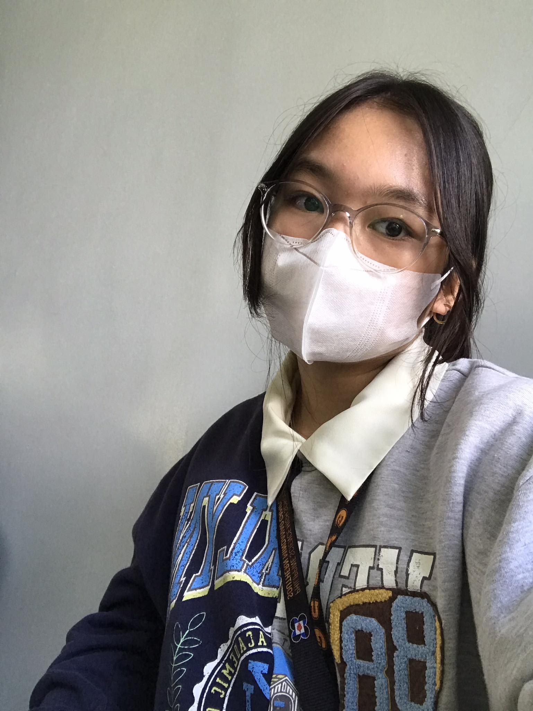

Personal Background
- I was born on February 9, 2009, in Cagayan de Oro City.
- I went to Divine Love School for preschool.
- Studied at Nanuri International School for grades 1 & 2.
- For 3rd grade, I transferred to St. Mary's School and graduated there.
- Is currently studying at PSHS-SMC (Philippine Science High School - Southern Mindanao Campus) as a grade 9 student
Facts About Me
- To go back home (CDeO), it is a 5 hour car ride, or a 45 min plane ride.
- I used to compete in Math Competitions and I was supposed to go to Thailand for the final round of TIMO (Thailand International Math Olympiad), but the pandemic cancelled those plans.
- I would like to pursue a medical course in college.
- I used to be a competitive swimmer, but I turned to Volleyball instead because I could practice it at home during the pandemic.
Some of My Hobbies
- Spending time with friends and family
- Travelling to different places, whether it may be in the Philippines or outside the country.
- Listening to music.
- I love reading Fiction, Romance, and Mystery books.
- I like to cook and bake food from different cuisines
- Spending time in the outdoors, especially horseback riding